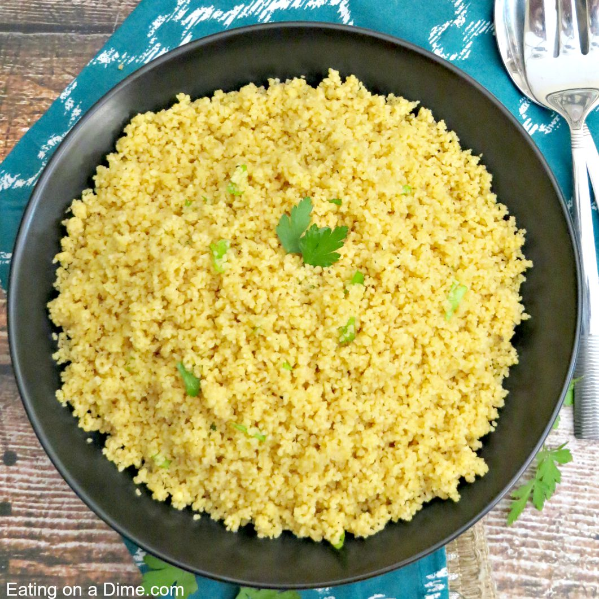

Couscous, the quinoa alternative.

Couscous, a good alternative to quinoa.
To make a bowl of couscous, all you need are three things.
Follow the recipe and you should not fail!
INGREDIENTS:
STEPS:
- Pour water into a pot
- Put the water to boil
- Put couscous in a bowl
- Pour water over couscous
- After five minutes, lift the lid and fluff the couscous with a fork
- Enjoy your perfect bowl of couscous!